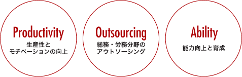

労務コンサルティング事業
コンセプト
激しい変化の時代、強い組織を創造する
私達の業種特性上、様々な業界、ビジネス環境を拝見する機会を頂いております。
中でも、伸びている組織・企業様の多くは強い組織を形成しており、多くの場合以下の3つのパターンに分ける事が出来ます。
・ライトサイジングで専門性の高い組織
・モチベーション高く、組織人員の多くが成長を感じている組織
・金銭的価値で無い部分での雇用を意識している組織
以上のような組織の出発点は「教育」と「仕組み作り」の2つからスタートしています。
私達は、「ヒューマンリソースコンサルティング室」を併設し、社会保険労務士を中心とした中小企業診断士やコンサルタントチームにて、クライアント企業様の強い組織づくりをサポートしています。

生産性とモチベーションの向上
- ・組織強化に伴うヒューマン・アセスメント
- ・意識改革をほどこすコミュニケーション戦略
- ・人材管理に関する定着化、モチベーションUP
- ・評価制度、昇給退職金規定の改善
総務・労務分野のアウトソーシング
- ・アウトプレースメントによる人員削減と再就職支援
- ・給与計算
能力向上と育成
- ・スタッフの教育、研修制度の設計
- ・マナー、接遇研修
- ・メンタルケア
コンサルティングメニュー
人事・労務コンサルティング部門
賃金規定・退職金規定等の社内制度の構築人事評価制度の策定と
運用社内研修・教育訓練賃金労務管理相談
総務アウトソーシング部門
給与計算事務労働保険・社会保険手続き公的助成金支給申請
バックアップ体制
“各分野のスペシャリストがプロジェクトを成功へと導く”
開発にあたり社内専門スタッフの他、独自のネットワークによる各分野における戦略性をもった
スペシャリストの参画で、プロジェクトを成功へ導く推進策を構築致します。
中小企業診断士
- ・小売り・サービスについてのトータルな経営支援
- ・金融支援、マーケティング戦略支援、カウンセリング
- ・接客研修、ISO、BCP（事業継続計画）策定等各種セミナー講師
- ・人材教育
社会保険労務士
- ・就業規則の作成および見直し
- ・助成金などの申請
- ・個別労働紛争解決処理
カウンセラー
- ・キャリアデザイン、カウンセリング、接客マナーなど
- ・各種研修
フードコーディネーター
建築設計士
- ・店舗のデザイン・設計・施工
（カフェ、ダイニング、エステティック、雑貨小物店など）
導入事例
販路開拓
- 近隣に大型店が出店したため、売上減少
- 自社の強みと機会を把握し、経営理念を明確にしました。顧客からの声を引き出し、経営理念である「地域のお客様に喜んでいただく」ために何をすべきかを検討しました。地域住民の世帯構成や趣味嗜好を分析し、ターゲットを絞り込んで得意先を回ったところ、大型店への不満が聞こえてきたため、その部分を徹底的にフォローする戦略で再建が成功しました。
人材育成
- 社員にやる気がない。お店の雰囲気が暗い。
- 経営者は、社員の能力向上を望んでおられましたが、実際には経営者自らが動き回っている様子でした。社員も、会社の方針が見えてこないために何をして良いか判らないという状態でした。そこで、経営理念から経営戦略までは経営者が考え、それを実践する方法については、権限を大幅に社員に委譲しました。その結果、雇用者満足度の向上が図れ、お店の雰囲気も格段に明るくなりました。
新製品開発
- 従来製品の技術を応用して、新製品を開発したい。
- 技術面においては同社にお任せし、マーケティングについて開発面のサポートをしました。顧客の期待を超えるにはどのような技術が必要かということにディスカッションを重ねて、コンサルタントとして客観的で現実的な分析をしました。その後、経営革新計画の認定を受けてアイディアを製品化し、関東近県へのセールスプロモーションを行いました。
店舗レイアウト
- 売れるアイディアが欲しい、チラシや商品陳列の良い方法を聞きたい。
- 店主はお客様第一主義を掲げていましたが、陳列棚の配置から店奥で作業している店員にはお客様の姿が見えず、声もかけられない状態でした。そこでまず、陳列棚のレイアウト変更と声掛けの実践をしてもらいました。また、お店側の思いがお客様に伝わっていないため、「当店からお客様へのお約束」を店員に宣誓させ、それを実現するために何をすべきかを提案しました。